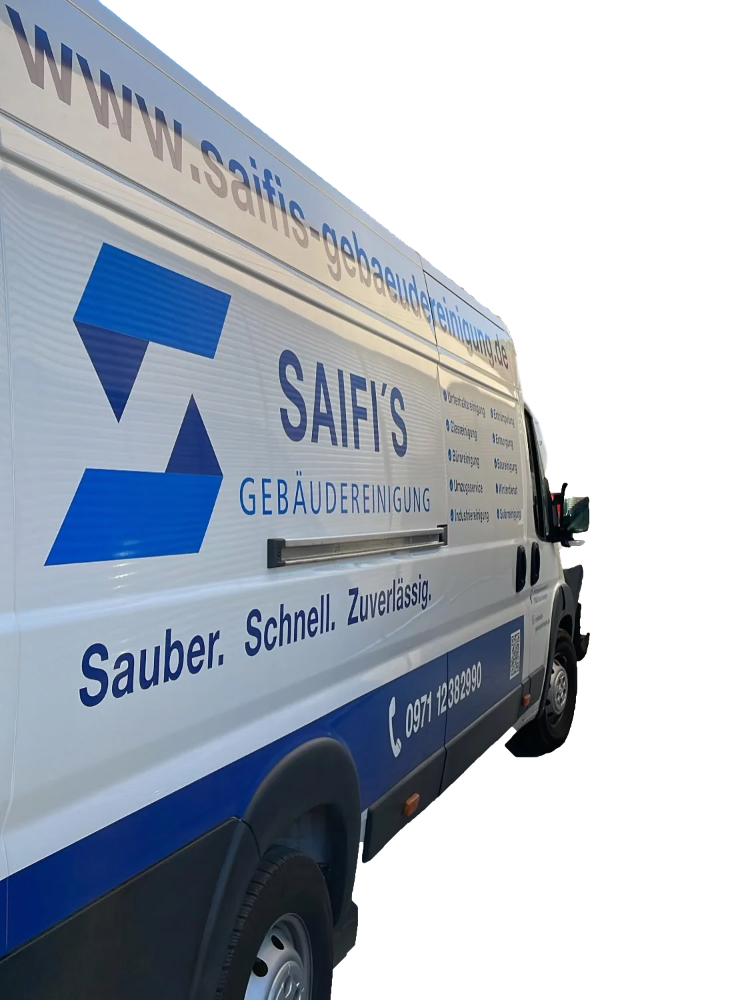

Sauber. Schnell. Zuverlässig.
Gebäudereinigung aus Bad Kissingen. Glas, Fassade, Solar, Treppenhaus und der ganze Rest.

Die Kolonne arbeitet nur, wenn Sie scrollen.
Das gilt nur auf dieser Seite. Alle Filme hier sind echte Einsätze von Saifi's, keine Stockfotos.
Glas.
Stange hoch, Wasser drauf, nächste Scheibe.
Lebenshilfe Hammelburg
Hoch.
Angeseilt, wenn es sein muss. Die Aussicht gibt es gratis dazu.
Solar.
Schmutz auf dem Modul nimmt der Anlage Licht. Also muss er runter.
Autohaus.
Wer Autos verkauft, verkauft auch durch die Scheibe.
Autohaus Löffler, Ford
Studio.
Das Glas über den Geräten putzt sich nicht von selbst. Die Leiter steht schon.
GoFit, Fensterreinigung
Gleich kommt die ganze Kolonne. Dann hören Sie einmal kurz auf.
Die ganze Kolonne.
Mehr Einsätze auf InstagramGegen die Sonne
Athera Physio, 3. Stock
Glaswand innen
Mit Gurt
Stange an der Fassade
Autohaus
Photovoltaik
GoFit, Türen
Was soll sauber werden? Wählen Sie, der Rest steht dann schon in der Anfrage.
Unangekündigt.
So prüft unser eigener Q-Check regelmäßig die Reinigungskräfte in Ihrem Objekt. Das Personal weiß nie, wann.
Und wenn etwas ist, rufen Sie Ihren persönlichen Ansprechpartner an.
So läuft es ab
- Anfrage.
Sie schreiben uns kurz oder rufen direkt an.
- Analyse.
Wir rufen zurück und kommen zum Termin in Ihr Objekt. Kostenfrei und 100% unverbindlich.
- Angebot.
Sie bekommen ein maßgeschneidertes Angebot für genau dieses Objekt.
Inhabergeführt, das heißt:
Naqeeb Ullah Saifi
„Dafür sorge ich als Geschäftsführer persönlich und gemeinsam mit meinem Team bin ich mir sicher, werden wir auch Sie begeistern können.“